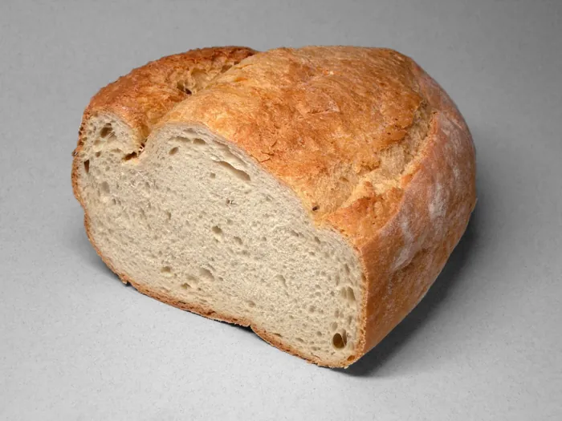
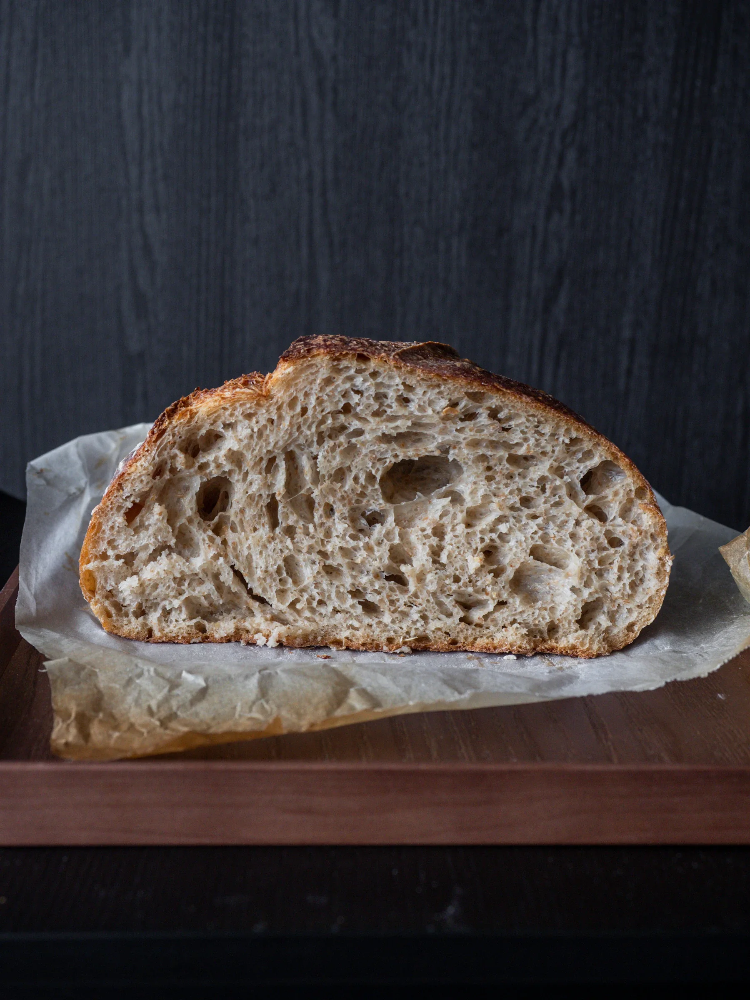
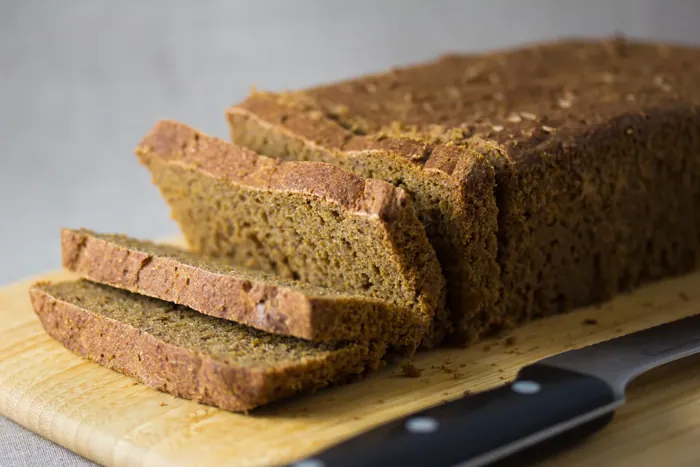
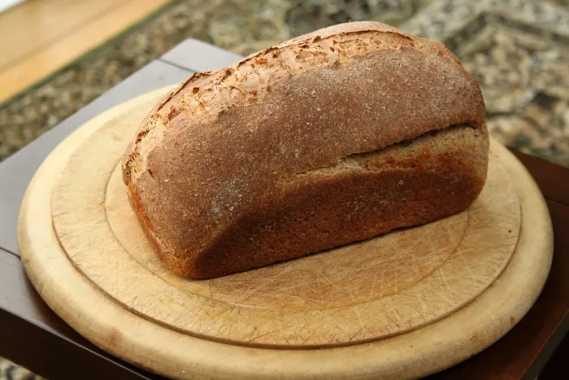
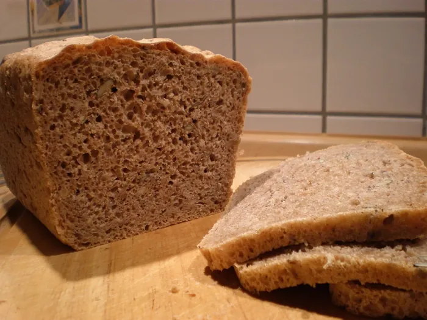
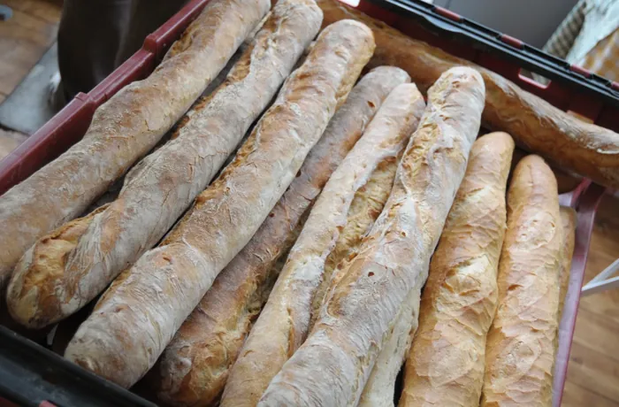
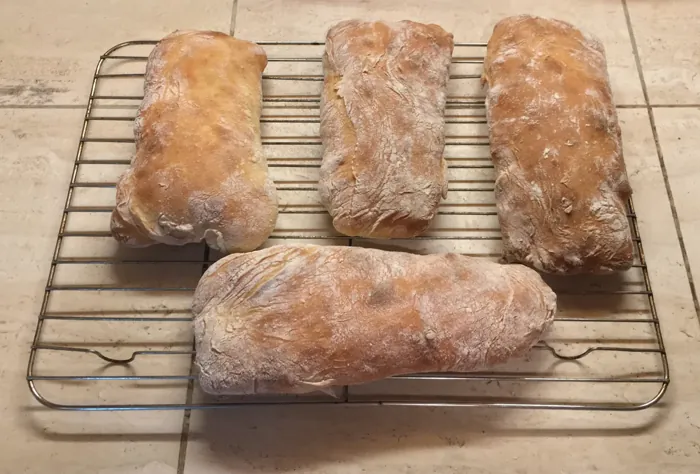

Bildquelle · Zuletzt aufgerufen am
Weizenbrot
Mild im Geschmack, luftig im Inneren. Der helle Klassiker, der zu fast allem passt.
Mehr erfahrenVon Korn zu Kruste
Sieben Brotsorten. Sieben Geschichten. Entdecke die Vielfalt des Brotes – von traditionellem Roggenbrot bis zum italienischen Ciabatta.
Brotsorten entdeckenEin kleines Stück Kultur. Jeden Tag.

Die Brotsammlung
Hell oder dunkel. Mild oder kräftig.
Entdecke, was unsere sieben Brotsorten besonders macht.

Bildquelle · Zuletzt aufgerufen am
Mild im Geschmack, luftig im Inneren. Der helle Klassiker, der zu fast allem passt.
Mehr erfahren
Bildquelle · Zuletzt aufgerufen am
Kräftiges Aroma und eine saftige, dichte Krume. Ein Stück mitteleuropäische Brotkultur.
Mehr erfahren
Bildquelle · Zuletzt aufgerufen am
Schale, Keimling und Mehlkörper: Hier kommt das ganze Getreidekorn ins Brot.
Mehr erfahren
Bildquelle · Zuletzt aufgerufen am
Mild, leicht nussig und vielseitig. Eine alte Weizenart zeigt, was in ihr steckt.
Mehr erfahren
Bildquelle · Zuletzt aufgerufen am
Schlanke Form, goldene Kruste, luftiges Inneres. Frankreichs täglicher Begleiter.
Mehr erfahren
Bildquelle · Zuletzt aufgerufen am
Unregelmäßige Poren und eine rustikale Form. Der italienische Klassiker mit der leichten Krume.
Mehr erfahrenBildquelle · Zuletzt aufgerufen am
Eine lebendige Kultur, eine lange Reife. Sauerteig schenkt Brot Tiefe, Charakter und eine besondere Kruste.
Mehr erfahrenAuf einen Blick
Typische Merkmale können je nach Rezept variieren. Vollkorn beschreibt die Bestandteile des Mehls, Sauerteig die Teigführung – ein Brot kann also zu mehreren Porträts passen.
Auf kleinen Bildschirmen lässt sich die Tabelle seitlich scrollen.
| Brotsorte | Getreide / Basis | Geschmack | Besonderheit |
|---|---|---|---|
| Weizenbrot | Weizen | Mild & fein | Helle, lockere Krume |
| Roggenbrot | Roggen | Kräftig & würzig | Saftige, eher dichte Krume |
| Vollkornbrot | Ganzes Getreidekorn | Kernig & aromatisch | Schale, Keimling und Mehlkörper bleiben erhalten |
| Dinkelbrot | Dinkel | Nussig & fein | Als helles Brot oder Vollkornbrot möglich |
| Baguette | Weizen | Knusprig & mild | Schlanke Form mit viel knuspriger Kruste |
| Ciabatta | Weizen | Luftig & aromatisch | Große, unregelmäßige Poren |
| Sauerteigbrot | Weizen, Roggen oder Dinkel | Vielschichtig & fein säuerlich | Mit einer lebendigen Sauerteigkultur gebacken |
Mehr als ein Lebensmittel
Mehl, Wasser, Salz und ein wenig Zeit: Aus wenigen Zutaten entsteht etwas, das Menschen seit Jahrtausenden begleitet. Brot gehört zum Alltag und erzählt zugleich von Landschaften, Getreide und handwerklichen Traditionen.
Ob kräftiges Roggenbrot im Norden oder luftiges Ciabatta in Italien – jede Region hat ihre eigenen Antworten auf eine einfache Frage: Wie wird aus Korn ein gutes Brot?
Die Idee hinter BrotweltenWissen, das Appetit macht
Jedes Brotporträt führt dich auch zu einem passenden Rezept.
Mit Weizenbrot beginnen